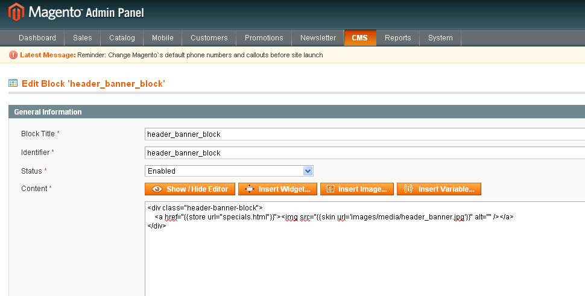
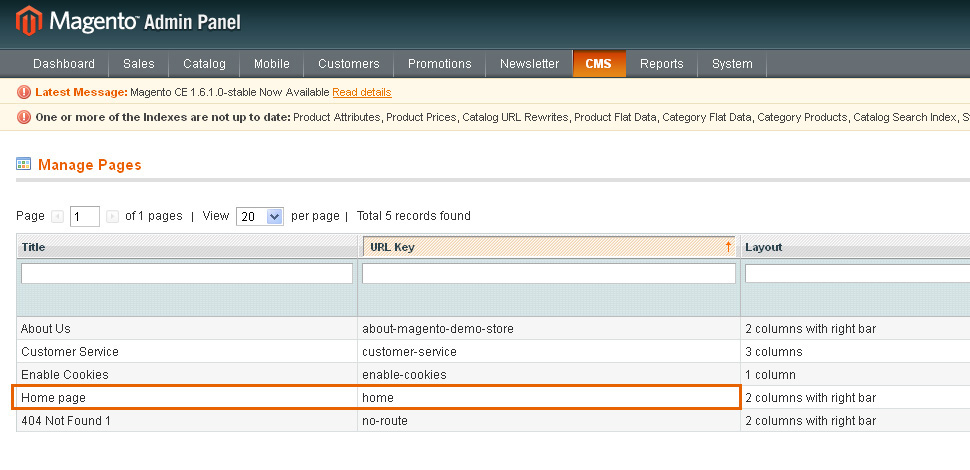
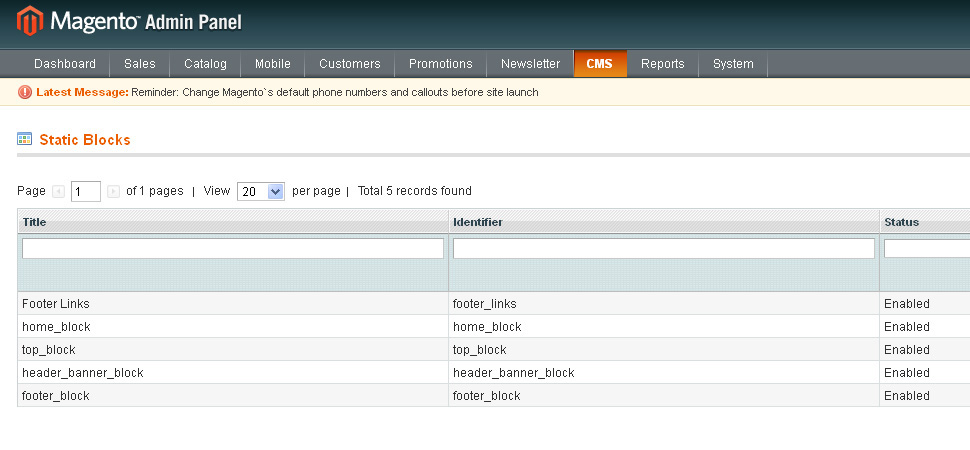

Einführung Was finden Sie in diesem Dokument und wie können Sie es nutzen
Vielen Dank, dass Sie die Vorlage von Magento gekauft haben. Dieses Dokument besteht aus einigen Teilen und stellt Ihnen nicht nur den ganzen Erstellungsprozess bei Null sondern auch Magento Shopverwaltung vor. Wir haben alles gemacht, damit diese Anleitung verständlich und einfach in der Handhabung ist.
Was ist denn Magento Commerce?
Magento ist eine multifunktionale Plattform für den Internethandel mit dem offenen Quellcode. Sie bietet flexible Möglichkeiten und die ganze Kontrolle über Aussehen, Inhalt, Funktionen der Online-Shops an. Das intuitive Control Panel von Magento gewährleistet wunderbare Möglichkeiten für Marketingmaßnahmen, Suchmaschinen und Katalogverwaltung, damit die Webseite den einzigartigen Business Prozessen jedes Shops entspricht. Magento wurde völlig skalierbar gestaltet und es wird mittels Varien unterstützt, deshalb bietet Magento eine gute Lösung für den Internethandel an. Ausführlich
Was ist eine Magento Vorlage?
Magento Vorlage ist fertiges Design für Ihren Online-Shop, der auf der Basis von Magento erstellt werden kann. Sie können leicht das Aussehen Ihres Online-Shops ändern, indem Sie nur neue Vorlage installieren. Alle Vorlagen von Magento enthalten alle notwendigen Quelldateien, die Sie nach Ihren Wünschen bearbeiten und hinzufügen können.
Struktur der Dateien
Das Archiv der Vorlage, das Sie heruntergeladen haben, besteht aus einigen Ordnern. Also, schauen wir mal, was sie enthalten:
- screenshots - enthält das Bildschirmfoto der Vorlage. Nicht für eine funktionierende Webseite
- sources - enthält die Quelldateien der Vorlage
- psd - Quelldateien für Adobe Photoshop (.psd)
- demo - enthält zusätzliche Seiten und benutzerdefinierte Blöcke, die zur Vorlage gehören
- sample_data - enthält die Demo-Daten für Magento Vorlage
- media - enthält Dateien und Ordner, die in den Stammordner der benutzten Magento Installation heruntergeladen werden müssen
- dump.sql.gz - Sicherheitskopie der Datenbank. Sie enthält die Demo-Daten der Vorlage.
- theme### - enthält die Dateien und Ordner der Magento Vorlage, die in den Stammordner der benutzten Magento Installation heruntergeladen werden müssen
- fonts_info.txt - enthält Links, mittels deren nicht Standardschriften heruntergeladen werden können, die in der Vorlage benutzt werden
- info.txt - enthält die Anleitungen zum Entpacken der Quelldateien.
Vorbereitung
Engine Magento muss zur Datenbank verbunden werden, um die Information zu speichern. Bevor Sie Magento Installation anfangen, überzeugen Sie sich, dass Sie die Datenbank MySQL erstellt haben. Dies können Sie anhand des Control Panels Ihres Hostings oder anhand des phpMyAdmin Panels machen.
Schauen Sie die ausführliche Anleitung an, wie man MySQL Datenbank erstellen soll. Wenn es irgendwelche Schwierigkeiten gibt, wenden Sie sich an Ihren Hosting-Anbieter.
Bei der Erstellung der Datenbank erhalten Sie solche Daten: Namen der Datenbank, Namen des Benutzers, Passwort und Adresse des Servers der Datenbank. Speichern Sie diese Daten, weil Sie sie bei der Magento Installation benötigen.
Installation der Magento Engine
1. Anforderungen an den Server
Überzeugen Sie sich, dass Ihr Hosting allen Magento Anforderungen entspricht:
- System: Unix, Linux oder Windows. Unix empfohlen.
- Web Server: Server Apache 1.3 oder höher, Microsoft's IIS 6.0 oder höher, und nginx 1.0 oder höher.
- PHP 5.2* oder höher.
- MySQL 5.0 oder höher.
- 32 Mb ist es Minimum des verfügbaren Speichers (es ist 64 Mb empfohlen, je mehr, desto besser).
Magento kann anhand PHP ab der Version 5.1 funktionieren, aber Versionen bis 5.2 enthalten Fehler, die einige Funktionen stören können (zum Beispiel, die Arbeit mit den Zeitzonen).
2. Herunterladen
Um Magento zu installieren, sollen Sie das Archiv von offizieller Webseite www.magentocommerce.com/download herunterladen.
Im Feld Download geben Sie den Namen und E-Mail-Adresse ein und drücken Sie den Button 'Herunterladen'.
Überzeugen Sie sich, dass Sie Magento Version herunterladen, die Ihrer Vorlage entspricht. Alle Magento Versionen sind auf SourceForge verfügbar.
3. Entpacken der Dateien
Nachdem Sie das Herunterladen beendet haben, sollen Sie die Dateien des Magento Archivs entpacken.
Dies können Sie anhand des Archivmanagers machen, zum Beispiel: WinZip(PC), StuffitExpander(MAC) usw.
Schauen Sie die Anleitungen an, mittels deren man Archive WinZip(PC) und StuffitExpander(MAC) entpacken kann.
Achtung: wenn es im Control Panel des Hostings den Button 'Extract' (entpacken)gibt, können Sie ihn nutzen, um das Archiv direkt auf dem Server entpacken zu können (das Archiv sollen Sie aufs Hosting herunterladen).
4. Herunterladen der Magento Dateien
Falls Sie das Archiv lokal (auf Ihrem Computer) entpackt haben, dann sollen Sie die Dateien aufs Hosting herunterladen.
Sie können den Dateimanager des Control Panels Ihres Hostings oder eine von FTP Anwendungen nutzen, zum Beispiel: FileZilla, TotalCommander, CureFTP usw.
Schauen Sie ausführliche Video-Anleitung an , wie man die Dateien auf den Server mittles FTP Manager und Dateien mittels cPanel (WebHost Manager, WHM) herunterladen soll.
5. Installation der Magento Engine
Nachdem Sie die Dateien heruntergeladen haben, können Sie Magento installieren. Öffnen Sie Ihren Browser und in der Adresszeile des Browsers geben Sie'Domainnamen/Weg zu Ihrem Ordner'ein. Sie müssen den Willkommensbildschirm sehen. Folgen Sie den Anleitungen unten, um Magento zu installieren.
Achtung: Datei dump.sql.gz muss vor der Magento Installation in die Datenbank importiert werden.
Das Archiv der Magento Vorlage enthält die Datei mit den Demo-Daten (dump.sql oder dump.gz). Diese Datei ist im Ordner /sources/sample_data Ihrer Vorlage. Sie ermöglicht Ihnen die Demo-Daten zu installieren, damit Ihre Webseite nach der Installation der Vorlage genauso wie auf der Demo-Version der Vorlage aussieht.
Um die Dump-Datei zu installieren, machen Sie folgende Schritte:
- Loggen Sie sich ins Control Panel der Datenbank (PhpMyAdmin) ein. Dahin können Sie mittels des Control Panels Ihres Hostings gelangen.
- Erstellen Sie neue Datenbank.
- Wählen Sie jene Datenbank, die Sie für Magento CMS nutzen möchten.
- Wählen Sie "IMPORT" und drücken Sie den Button "Browse."
- Öffnen Sie den Ordner "/sources/sample_data" Ihrer Vorlage und wählen Sie die Datei dump.sql.gz.
- Drücken Sie den Button "GO".
Nutzen Sie die Datei dump.sql.gz nicht, wenn Sie schon einen funktionierenden Online-Shop haben. Der Import der Datei dump.sql.gz löscht alle hinzugefügten Produkte. Wenn Sie die Demo-Daten nicht installieren möchten, dann installieren Sie Magento auf die leere Datenbank. Machen Sie keine Installation der Demo-Daten, die diese Anleitung enthält.
Installation der Vorlage
Der folgende Schritt des Installationsprozess ist die Hinzufügung der Vorlage. Auf jeden Fall muss die Vorlage installieren werden.
- Zuerst öffnen Sie das Archiv mit der Vorlage und gehen Sie in den Ordner theme### über.
- Laden Sie den Inhalt des Ordners theme### in den Ordner der Magento Installation (laden Sie die Ordner "app", "skin" und andere herunter)herunter. Diese Ordner enthalten die Dateien des Themas. Es wird nichts mit den Dateien, die Sie früher erstellt haben, passiert.
- Wenn Sie die Datei dump.sql.gz importiert haben und die Demo-Daten nutzen möchten, dann sollen Sie die Bilder der Produkte herunterladen. Laden Sie den Ordner "media" aus dem Ordner sources/sample_data in den Ordner der Magento Installation herunter.
- Wenn Sie die Datei dump.sql.gz nicht importiert haben, dann sollen Sie den Ordner "media"herunterladen.
Schritt 1: Installation Assistant
Lesen Sie, bitte, die Lizenzvereinbarung durch und hacken Sie ab, dass Sie damit zustimmen.
Schritt 2: Installation Assistant (Lokalisierung)
Wählen Sie Lokalisierung, Zeitzone und Währung standardmäßig. Indem Sie die Lokalisierung wählen, wird die Sprache des Control Panels Ihres Online-Shops definiert. Wenn Sie die Sprache der Seiten des Magento Shops ändern möchten, dann sollen Sie entsprechende Lokalisierung zusätzlich herunterladen und installieren. Alle Einstellungen können später mittels des Control Panels Magento geändert werden.

Schritt 3: Einstellung
Hier sollen Sie die Daten für den Zugang auf die Datenbank und einige Grundeinstellungen eingeben. Database Connection – geben Sie die Adresse des Servers, Namen der Datenbank, Namen des Benutzers und Passwort ein. Setzen Sie sich mit Ihrem Hosting-Anbieter in Verbindung, wenn irgendwelche Daten fehlen.
Überzeugen Sie sich, dass Sie die Datenbank für die Magento Installation erstellt haben. Überzeugen Sie sich, dass sie leer ist und keine Tabellen enthält. Web access options und Session Storage Options – lassen Sie diese Bereiche ohne Änderungen, wenn Sie nich überzeugt sind, was Sie machen. Die Einstellungen, die standardmäßig sind, passen meistens.

Wenn alles richtig ist, drücken Sie den Button 'Continue'.
Schritt 4: Create Admin Account
Hier sollen Sie persönliche Angaben zum Inhaber des Online-Shops oder Manager eingeben.

Nachdem Sie die Angaben eingegeben haben, drücken Sie den Button 'Continue'.
Schritt 5: You are All Set
Es ist der letzte Schritt der Installation. Kopieren Sie den verschlüsselten Code und speichern Sie ihn an einem sicheren Ort. Sie können die Buttons in der rechten unteren Ecke nutzen, um ins Control Panel Ihres Online-Shops oder auf die Seiten Ihres Online-Shops zu gelangen.

Installation der Magento Vorlage auf funktionierende Webseite
1. Einstellung der Vorlage manuell.
Zuerst überzeugen Sie sich, dass die installierte Magento Version der gewählten Vorlage entspricht. Wenn Sie die alte Magento Version nutzen, dann sollen Sie sie erneuern. Vergessen Sie nicht, die Sicherheitskopie der Dateien des Online-Shops und der Datenbank zu erstellen. Die Anleitungen zur Magento Erneuerung sind auf der Webseite Magento Wiki verfügbar.
Wenn Magento Engine den Anforderungen der Vorlage entspricht, dann können Sie die Installation anfangen.
- Öffnen Sie das Archiv der Vorlage und gehen Sie in den Ordner theme### über.
- Laden Sie den Ordner theme### in die Magento Stamminstallation (landen Sie "app", "skin" und andere Ordner herunter) herunter. Diese Ordner enthalten die Dateien der Vorlage. Sie werden auf existierende Dateien nicht einwirken.
1. Einstellung der Vorlage
Einstellung der Vorlage manuell
- Aktivieren Sie die neue Vorlage
- Öffnen Sie das Control Panel Magento und wählen Sie in dem oberen Menü System > Design.
- Drücken Sie den Button "Add Design Change".
- Im Feld "Custom Design" wählen Sie den Namen der Vorlage (zum Beispiel, theme###).
- Drücken Sie den Button "Save" , um gemachte Änderungen zu speichern.
- Reindizieren der Daten
- Öffnen Sie das Control Panel Magento und wählen Sie in dem oberen Menü System > Index Management.
- Wählen Sie das Feld "Select All" in der oberen linken Ecke.
- Links im Feld "Actions" wählen Sie "Reindex Data".
- Drücken Sie den Button "Submit".
- Haben Sie etwas Geduld. Diese Operation kann länger dauern.
2. Einstellung des Logos.
Folgen Sie dieser Anleitung, um das Problem mit dem Logo zu lösen.
- Öffnen Sie das Control Panel Magento und wählen Sie in dem oberen Menü System > Configuration.
- Öffnen Sie die Taskleiste "Design".
- Im Bereich "Header" bearbeiten Sie die Bedeutung des Feldes "Logo Image Src". Ersetzen Sie sie "gif" durch "png".
- Drücken Sie den Button "Save Config".
3. Einstellung der Seiten
Die Hauptseite der Vorlage kann folgende Elemente enthalten: Banner, Slider, Galerie, flash Animation usw. Um diese Blöcke in den Online-Shop hinzuzufügen, folgen Sie dieser Anleitung.
Wir empfehlen den WYSIWYG Editor auszuschalten. Um dies zu machen, wählen Sie in dem oberen Menü des Control Panels System > Configuration. Öffnen Sie den Bereich "Content Management" und im Fenster WYSIWYG Options schalten Sie "Enable WYSIWYG Editor" auf "Disabled Completely" um.
- In dem oberen Menü wählen Sie CMS > Pages. Seiten Home page, About Us und Customer Service müssen verfügbar sein, weil Sie sie hinzufügen sollen. Sie sollen nur HTML und XML Inhalt der Seiten erneuern.
- Falls Sie eine neue Seite hinzufügen möchten, drücken Sie den Button "Add New Page" in der oberen rechten Ecke.
- Öffnen Sie die Seite und wählen Sie die Taskleiste Content. Sie enthält HTML Code der Seite. Sie können den notwendigen Code aus der entsprechenden Quelldatei nehmen. Die Liste der Quelldateien können Sie in der Tabelle unten finden. Kopieren Sie den Code aus der Quelldatei und fügen Sie ihn in den Bereich content ein.
- Wenn Sie mit dem Code fertig sind, gehen Sie zur Taskleiste "Design"über. Sie enthält XML Code der Seite. XML Code muss genauso wie HTML aus der Quelldatei kopiert werden. Fügen Sie den neuen Code in den Bereich "Layout Update XML" ein.
- Vergessen Sie nicht, die notwendige Einstellung "Layout" zu wählen.
Wenn es Schwierigkeiten gibt, schauen Sie die ausführliche Anleitung an Wie installiert man die Seiten des Demo-Inhalts manuell.
| # | Page Name | Page HTML (Leiste Content) | Page XML (Leiste Design) | Maket |
|---|---|---|---|---|
| 1. | Home Page | sources\demo\pages\home_page.phtml | sources\demo\pages\home_page.xml | 1 Spalte |
| 2. | About Us | sources\demo\pages\about_us.phtml | fehlt | 1 Spalte |
| 3. | Customer Service | sources\demo\pages\customer_service.phtml | fehlt | 1 Spalte |
| 4. | Privacy Policy | sources\demo\pages\privacy_policy.phtml | fehlt | 1 Spalte |
4. Einstellung der statischen Blöcke
Nachdem Sie die Seiten eingestellt haben, sollen Sie die statische Blöcke einstellen. Der Prozeß ist ähnlich, Sie sollen nur den Code aus den Quelldateien kopieren.
- In dem oberen Menü wählen Sie CMS > Static Blocks.
- Drücken Sie den Button "Add New block" in der rechten oberen Ecke, um den neuen Block hinzuzufügen.
- Geben Sie den Namen des Blocks und den Identifikator ein. Sie können die notwendigen Daten in der Tabelle unten finden.
- Öffnen Sie die Quelldateien der Blöcke und kopieren Sie HTML Code in den Bereich content.

Achtung: Einige Vorlagen enthalten die statischen Blöcke nicht, deshalb kann die Tabelle leer sein.
| # | Name des Blocks | Titel des Blocks | Identifikator | Inhalt |
|---|---|---|---|---|
| 1. | Footer List | Footer List | footer_list | sources\demo\static_blocks\footer_list.phtml |
| 2. | Custom tab | Custom tab | custom_tab | sources\demo\static_blocks\custom_tab.phtml |
| 3. | contact_block | contact_block | contact_block | sources\demo\static_blocks\contact_block.phtml |
| 4. | Map contents | Map content | map_content | sources\demo\static_blocks\map_content.phtml |
| 5. | Footer info | Footer info | footer_info | sources\demo\static_blocks\footer_info.phtml |
Quelldateien für statische Blöcke sind in dem Ordner "sources\demo\static_blocks\" des Vorlagenarchivs.
Nachdem Sie die Seiten und statische Blöcke eingestellt haben, kann Ihr Online-Shop funktionieren.
2. Allgemeine Einstellungen
Bei der Bearbeitung der Seiten und der statischen Blöcke empfehlen wir Ihnen WYSIWYG Editor auszuschalten. Dafür wählen Sie in dem oberen Menü des Control Panels System > Configuration. Öffnen Sie den Bereich "Content Management" und im Fenster WYSIWYG Options ersetzen Sie die Bedeutung "Enable WYSIWYG Editor" durch "Disabled Completely".
1. Wie bearbeitet man die Seiten
-
Wählen Sie in dem oberen Menü CMS > Pages. Hier gibt es alle Seiten des Online-Shops. Öffnen Sie jegliche von ihnen, um den Zugang zum Inhalt zu bekommen.

- Wählen Sie in der linken Spalte die Taskleiste Content. Sie enthält HTML Code der Seite. Sie können ihn bearbeiten.
- Öffnen Sie die Taskleiste "Design", um den Zugang zum XML Inhalt zu bekommen. XML Code erlaubt Ihnen statische Blöcke Magento und Widgets auf die Seite zu integrieren.
2. Wie bearbeitet man die statische Blöcke
In dem oberen Menü wählen Sie CMS > Static Blocks.
Öffnen Sie jeglichen von den statischen Blöcken. Sie werden seinen HTML Inhalt sehen. An diesem Beispiel nutzen wir den Block der Banner. Indem Sie HTML Code nutzen, können Sie einfach Banner, Links usw. bearbeiten.
3. Wie stellt man Currency Modul ein
- Öffnen Sie das Control Panel Magento.
- Wählen Sie in dem oberen Menü System > Configuration.
- Öffnen Sie die Taskleiste General und wählen Sie Currency Setup.
- In Currency Options, indem Sie CTRL Button drücken, können Sie die Währungen wählen, die in Ihrem Online-Shop verfügbar sein müssen. Wenn Sie alle notwendigen Währungen wählen, drücken Sie den Button Save Config, um die Änderungen zu speichern.
- Gehen Sie in System > Manage Currency Rates in dem oberen Menü über.
- Legen Sie den notwendigen Währungskurs fest oder stellen Sie den Import ein. Drücken Sie den Button Save Currency Rates, um die Änderungen zu speichern.
4. Wie bearbeitet man Polls Modul
Wählen Sie in dem oberen Menü CMS > Polls.

Einstellung der Erweiterungen
1. Olark Live Chat
Um solchen Online-Chat einzustellen, wie auf Live Demo, sollen Sie sich auf der offiziellen Webseite Olark registration anmelden. Nachdem Sie alle Daten eingegeben haben, erhalten Sie den Code, den Sie mittels des Control Panels einfügen müssen.

2. Cloud Zoom
Einstellung Cloud Image Zoom gibt Ihnen die Möglichkeit die Größen des DropDownBildes zu ändern und die Originalgröße des Bildes festzulegen.

3. Add This
Einstellungen Sharing Tool geben Ihnen die Möglichkeit den Anzeigetyp des Icons zu wählen (empfohlener Typ ist auf dem Bildschrimfoto angezeigt).

4. Cookie-Politik
Cookies sind kleine Textdateien, die die Webseiten auf den Computern der Besucher platzieren. Gewöhnlich werden sie zur Kundenidentifikation benutzt und sie erleichtern auch die Benutzung der Webseite. Cookies sind ein fester Bestandteil der Funktionen der Webseite, die wir immer nutzen.
Zum Beispiel, mittels Cookie speichern Online-Shops diejenigen Produkte, die Sie in den Warenkorb hinzugefügt haben. Cookies ermöglichen auch den Benutzern "im System" auf der Webseite zu bleiben und den Inhabern der Webseite die wichtige Information und Statistik über die Besucher zu bekommen.
Wenn Sie die Webseite haben, wird Cookie höchstwahrscheinlich auf dieser Webseite benutzt. Cookie wird meistens benutzt, um die Menge und Verhalten der Besucher zu folgen (indem man Werkzeuge Google Analytics nutzt). Man nutzt Cookies, um die aktuellen Angebote für die Besucher anzuzeigen. Cookies werden auch benutzt, damit die Werkzeuge des Online-Shops funktionieren können.
Am 26. Mai 2012 ICO Organisation hat die Änderungen zu den Rechtsvorschriften über Cookies veröffentlicht. Seitdem "diese Vereinbarung" erlaubt wurde, müssen Sie unbedingt zeigen, wo auf der Webseite Ihre Datenschutzrichtlinie und Cookies sind.
Indem Sie allen Rechtsvorschriften der Cookies folgen, müssen Sie entsprechende Module auf Ihre Webseite hinzufügen, die die Warnung vor dem Cookie anzeigen werden (die auf der Webseite benutzt werden). Wie empfehlen die folgenden Module:
Fazit
Magento Engine ist eine wunderbare Lösung für Ihren Online-Shop. Sie enthält standardmäßig alle Module, damit Sie erfolgreich Ihre Produkte verkaufen können. Offener Quellcode gibt Ihnen die ganze Breite von Möglichkeiten, damit Sie Online-Shops erstellen können. Die Struktur dieser Engine ist nicht ganz einfach, deshalb brauchen Sie noch Zeit, um sich mit ihr bekannt zu machen. Außer Information, die diese Anleitung enthält, müssen Sie noch mehr erfahren.
Um Magento Fachmann zu werden, benötigen Sie folgende Ressourcen: